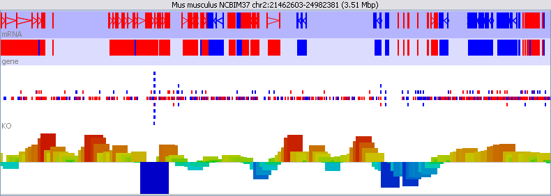
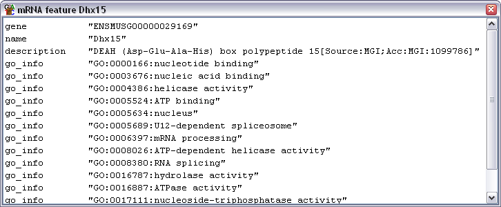
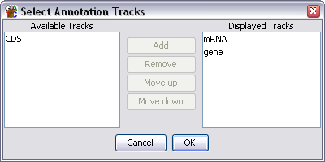
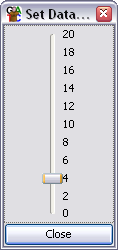
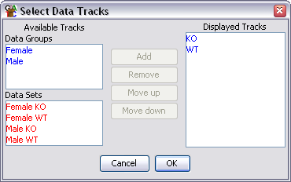

The chr view is the most complex view in SeqMonk and is also where you're likely to focus most of your attention. There are quite a lot of options for changing the information which it displays to you.

The view is divided into tracks. The top of the display is a line of text which tells you which assembly and chr you are currently viewing. It also lists the current position and provides the length of the current view.
Below the text line come a set of annotation tracks which have a blue background, and below them are a set of data tracks which have a white/grey background.
Finally at the bottom is a status bar which can display various pieces of information - usually related to the feature which is currently under the mouse.
Annotation tracks show the features from an annotated genome. Each track shows one type of feature (gene, CDS, exon etc). The type of feature shown in each track is written on the far left hand side of the track.
Features in an annotation track are coloured in either red or blue. The colour indicates the direction of the feature along the genome.
The feature itself is represented as a filled block of colour. Where a feature has two or more linked locations (like exons in an mRNA transcript) the different blocks are joined with an arrow. The arrow indicates the direction of the feature, ie it shows the same information as the feature's colour.
If you put your mouse over a feature it will turn yellow. If there is enough space then the feature type and name will be displayed underneath it. If you want to see more details about the feature you can double-click on it and a feature annotation window will open up.

Normally labels will only be displayed when you mouse over a feature. You can turn all labels on all by selecting View > Show All Labels, but you should be aware that unless you are looking at a very small region of genome the labels will sit on top of each other so they are illegible.
You can change which annotation tracks are shown and the order of the tracks by selecting View > Set Annotation Tracks, or by using the toolbar shortcut.

The list of tracks on the right is the tracks which will be displayed in the chr view. The list on the left are tracks which have been loaded, but aren't currently being displayed. You can move tracks from one side to another, and move the visible tracks up and down the list to get the set you want.
To save on memory usage only a subset of the available annotation tracks are actually loaded when SeqMonk starts. If you want to add a track which isn't loaded by default then you need to enable the track in your preferences.
Data tracks can show two kinds of information
You can choose whether you want to display either or both of these pieces of information using the options under View > Data Track Display or by using the corresponding toolbar buttons.
SeqMonk shows reads as coloured blocks where the colour indicates the strand against which the read was mapped.
If there is sufficient space then there will be several rows allocated to displaying reads. Reads start off being positioned in the middle row and are moved up or down if they overlap with another read on the same row. The collection of reads therefore expands vertically in regions of high read-density.
If you put your mouse over a read it will be highlighted in yellow. The status bar at the bottom will show the details of the position and length of the read.
The quantitated probe part of each data track is shown as a histogram. By default the origin for the histogram is the bottom of the track, but if you have performed a quantitation which can produce negative values then you can change this to be in the middle of the track by using the options under View > Data Track Display or by using the corresponding toolbar buttons.
Each probe is represented by a single bar on the histogram. The bars are coloured on a cold - hot colour scheme based on their value within the current scale so a very low bar will be blue and a high bar will be orange or red.
The histogram is not scaled to the values for your particular quantitation and you can adjust the scaling to allow you to see the information you want. To change the scaling of the quantitated data you should select View > Set Data Zoom Level or press the corresponding toolbar button.

If you drag the slider up you will extend the data range (the bars will get smaller), if you drag it down you will compress the range (the bars get bigger).
If you put your mouse over a probe it will be highlighted in white and its position and value will be shown in the status bar.
You can change which data tracks are shown and the order of the tracks by selecting View > Set Data Tracks, or by using the toolbar shortcut.

The list of tracks on the right is the tracks which will be displayed in the chr view. The lists on the left are tracks which aren't currently being displayed. You can move tracks from one side to another, and move the visible tracks up and down the list to get the set you want.
Within the data track area you can mix DataSets and DataStores however you wish. DataSets are shown with red names and DataGroups with blue names.
In addition to the dialog for changing the displayed data tracks you can also add and remove individual tracks by using the popup menus available in the Data View.